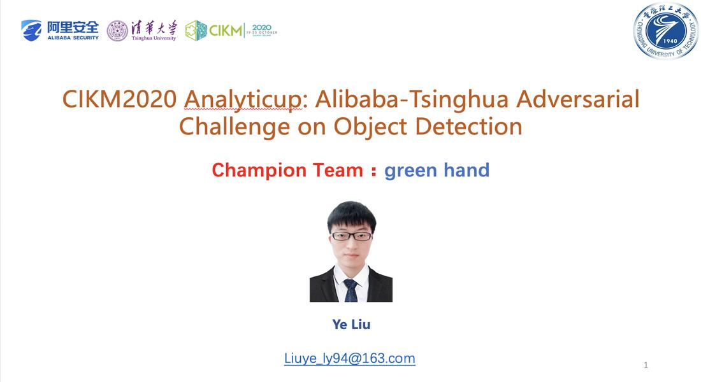

Seminars
New

Topic:Graph based Cross-Modal Retrieval
Date:Oct 30, 2020
Abstract: Cross-Modal Retrieval aims to retrieve the texts (images) that describe the most relevant contents for a given image (text) query. Most existing works represent correspondence between image and text by utilizing coarse correspondence between words and objects. I am going to introduce two graph based methods that learn fine-grained phrase correspondence for this matching task.

Topic:CIKM2020 通用目标检测对抗攻击竞赛经验分享
Date:Oct 30, 2020
Abstract: 深度神经网络已经在各种视觉识别问题上取得了最先进的性能。尽管取得了极大成功，但深度神经网络很容易遭受输入上微小和不可察觉的干扰导致误分类（这些输入也被称为对抗样本），深度神经网络模型的安全问题也在业内引起了不少的担忧。为了发现目标检测模型的脆弱性、为此领域的工作者敲响警钟。本次阿里安全举办了CIKM2020 通用目标检测的对抗攻击的比赛，该比赛是全球首个结合黑盒白盒场景，针对多种目标检测模型的对抗攻击竞赛。该比赛采用COCO数据集。任务是通过向原始图像中添加对抗补丁（adversarial patch）的方式，使得典型的目标检测模型不能够检测到图像中的物体，绕过目标定位。为了更好的评价选手的攻击效果，这次比赛创造了全新的得分计算准则。除了加入攻击成功率之外，还对添加补丁的数量和大小进行了约束。选手添加的补丁数量、修改的像素和模型识别到的包围盒越少，则代表攻击更加成功，得分则越高。为了保证比赛的难度，比赛选取了4个近期的State-of-the-art检测模型作为攻击目标，包括两个白盒模型——YOLO v4和Faster RCNN和另外两个未知的黑盒模型。